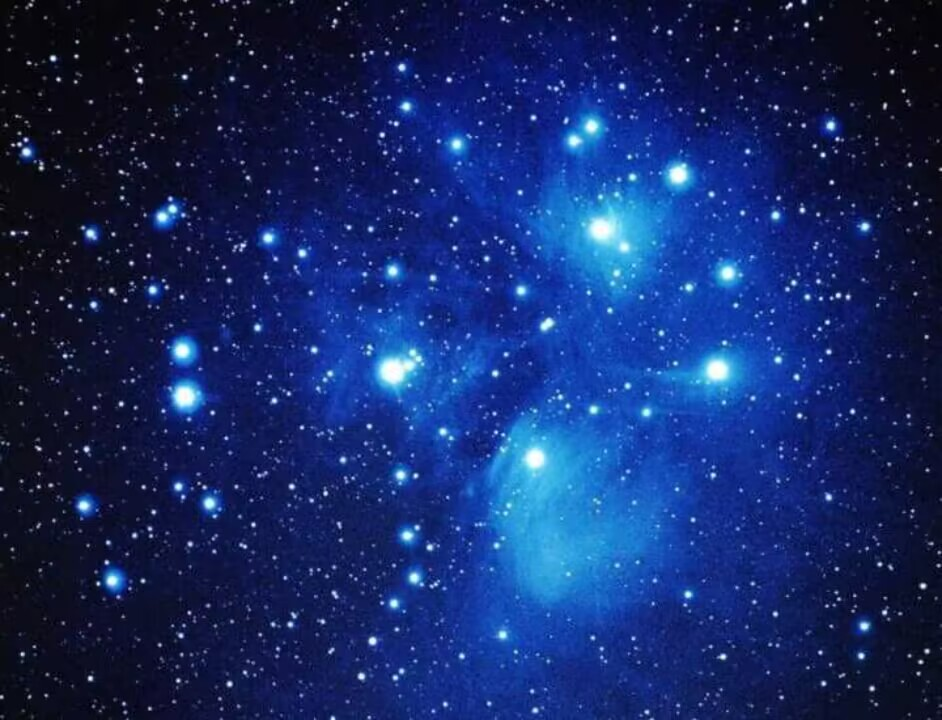

这里的内容也许和universe and star 的主题没有什么关系但也是自己喜欢的一些图片和文字，故名夹带私货。
云边有个小卖部，货架堆着岁月和夕阳，背后就是山。老人靠着躺椅假装睡着，小孩子偷走了一块糖。泪水几点钟落地，飞鸟要去向何方。人们聚和离，云朵来又往。讲故事的人，总有一个故事不愿讲。时光飞逝，悄悄话变成纸张。
夏夜的歌声，冬至的歌声，都从水面掠过，皱起一层波纹，像天空坠落的泪水，又归于天空。人们随口说的一些话，跌落墙角，风吹不走，阳光烧不掉，独自沉眠。
有朵盛开的云，缓缓滑过山顶，随风飘向天边。我们慢慢明白，有些告别，就是最后一面。再习惯等待，等不来依旧难过，那种难过，书上说叫做失望。直到长大后，他才明白，还有更大的难过，叫做绝望。有些人刻苦铭心，没几年会遗忘。有些人不论生死，都陪在身旁。
山风微微，像月光下晃动的海浪，温和而柔软，停留在时光的背后，变成小时候听过的故事。
桃树枝叶茂密，风吹得哗啦啦响，仿佛从山林间带来了消息。她满足地闻了闻，似乎能闻到风中的气息，它翻山越岭，穿过岁月，有浪潮轻拍沙岸的味道。